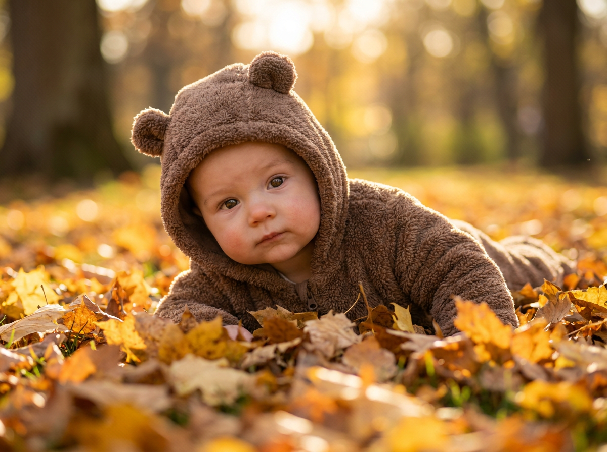
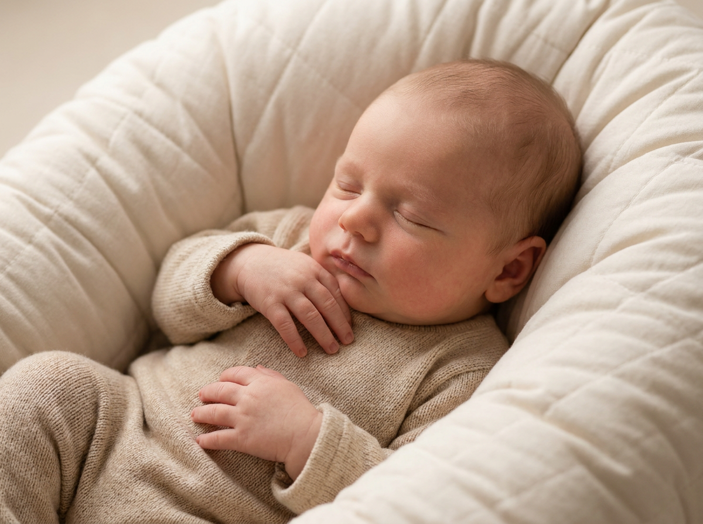
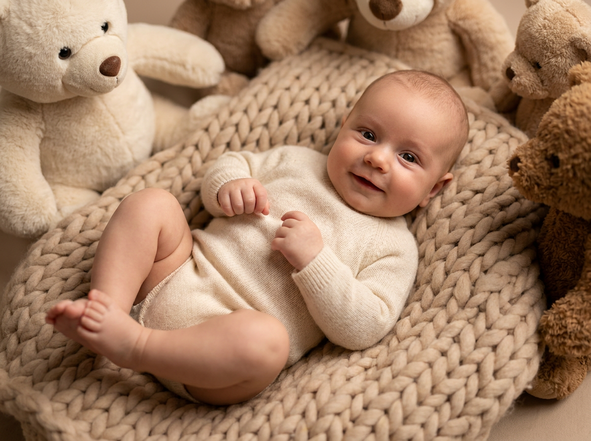
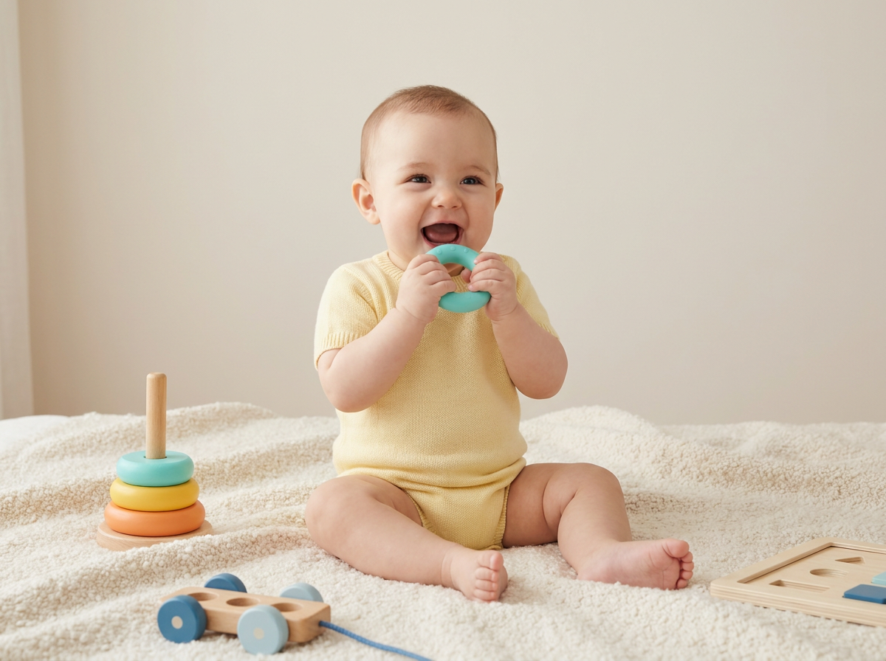
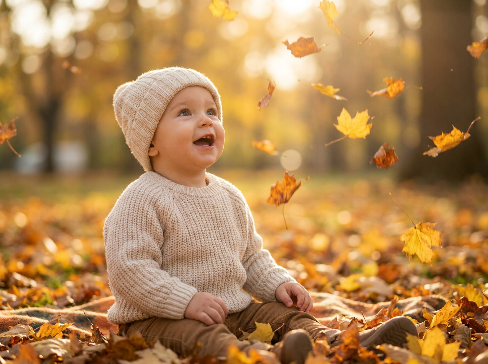
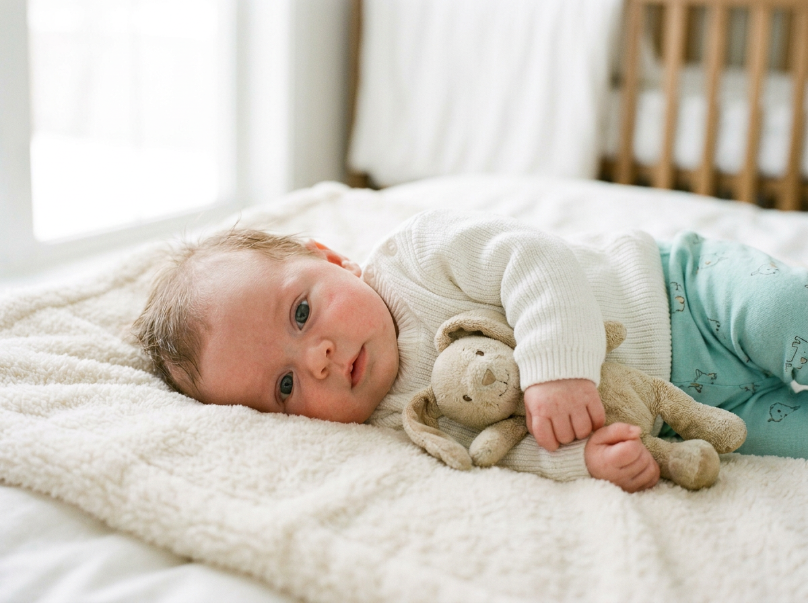
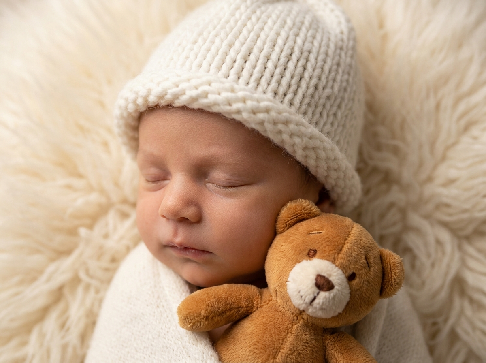
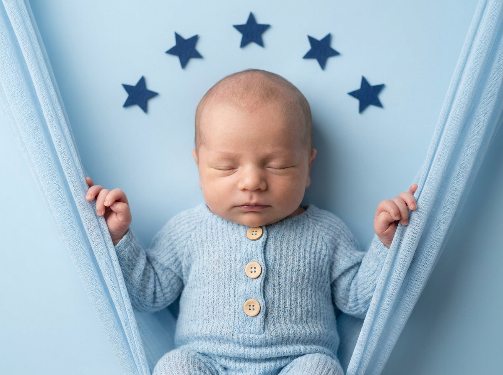
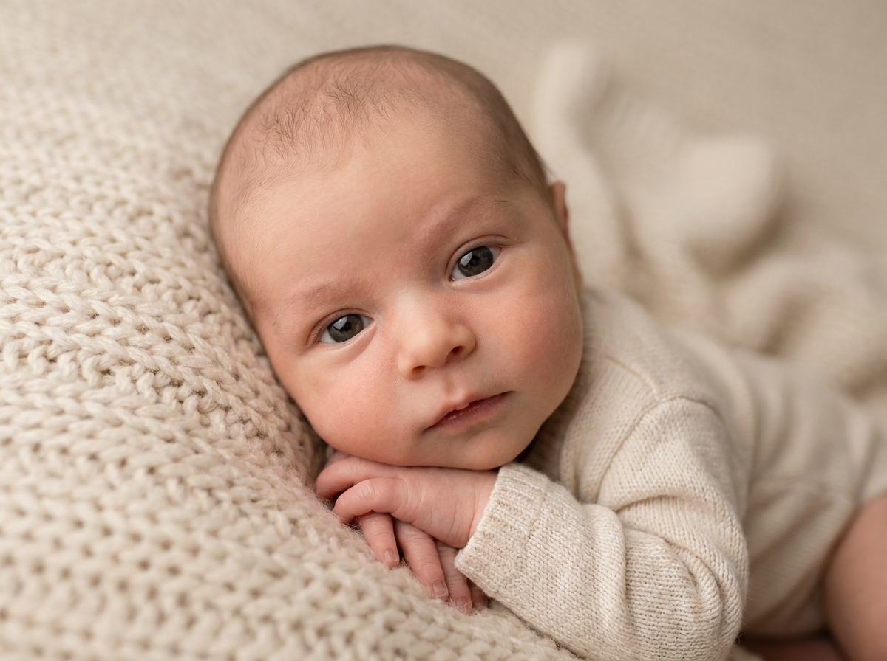
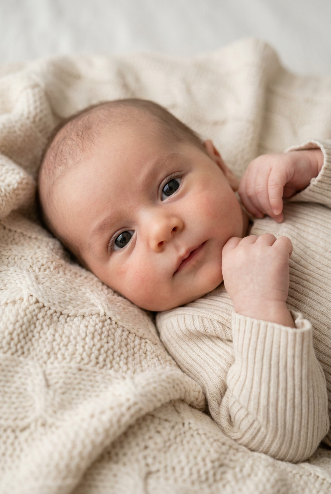

ИИ-фото ньюборн: 10 промптов для нейросети

Красивый newborn-кадр сложно снять без студии, реквизита и спокойного сна малыша. Генерация помогает собрать нужную сцену за несколько попыток: от уютного кокона до осенней фотосессии в листьях.
В подборке — 10 промптов для нейросети с разными настроениями и композициями. Здесь есть крупные портреты, сонные позы, плюшевые игрушки, гамак, вязаная одежда, золотой час и мягкий домашний свет.
Как сгенерировать такое фото: пошагово
Нужен снимок анфас при ровном свете, лицо в кадре целиком, без тёмных очков и головных уборов. Разрешение от 1000 пикселей по короткой стороне. Чем чётче исходник, тем точнее модель повторит черты.
Выберите сценарий ниже и нажмите «Копировать» — текст уйдёт в буфер целиком, вместе с командой сохранения внешности. Эта команда стоит первой строкой и отвечает за то, чтобы на выходе было ваше лицо, а не случайное.
Кнопка «Сгенерировать» рядом с каждым промптом открывает модель в новой вкладке. Nano Banana Pro работает с референсом лица — в отличие от моделей, которые генерируют портрет с нуля и узнаваемость теряют.
Промпт — в поле ввода, портрет — через загрузку референса. Порядок значения не имеет, но без референса команда сохранения внешности работать не будет: модели нечего сохранять.
Для сторис и ленты берите 9:16, для превью и обложек — 4:3. Первый результат редко идеален: если поза или свет ушли не туда, поправьте соответствующую часть промпта и запустите заново. Обычно хватает двух-трёх итераций.
10 промптов для генерации
1. Малыш в осенних листьях
Строго сохранить внешность по загруженному референсу: черты лица, пропорции, мимику и текстуру кожи без изменений. Вертикальная фотореалистичная кинематографичная фотография младенца в осеннем парке. Ребёнок лежит или сидит совсем низко над землёй, почти скрыт густым ковром опавших листьев и слегка прикрыт сверху тонким слоем сухих аккуратно собранных листьев. Камера установлена на уровне земли, поэтому листья на переднем плане выглядят как объёмный ковёр. Лицо находится в центре, взгляд направлен в объектив или немного мимо него, выражение спокойное и задумчивое. На малыше тёплый коричнево-карамельный комбинезон из плюша или шерстяного букле: хорошо видны ворс, волокна, швы и фактура ткани. Капюшон украшен двумя округлыми ушками медвежонка. Мягкий рассеянный дневной свет, натуральные цвета, малая глубина резкости, резкость на лице, реалистичная кожа и естественные пропорции.
2. Сон в мягком коконе

Строго сохранить внешность по загруженному референсу: черты лица, пропорции, мимику и текстуру кожи без изменений. Вертикальный студийный портрет новорождённого в уютной светлой композиции. Малыш расслабленно лежит внутри большого овального кокона-гнезда, похожего на люльку-ракушку. Кокон занимает большую часть кадра и образует вокруг ребёнка мягкую округлую рамку; его поверхность обёрнута светлой тканью с объёмной стёжкой, складками и заметной текстурой. Голова чуть повернута вправо, глаза закрыты, губы мягко сомкнуты, выражение сонное и безмятежное. На коже заметны естественные оттенки и лёгкий румянец, без пластикового блеска. У лба и по краям головы видны отдельные тонкие пряди волос. Одежда светлая, минималистичная и удобная для сна: мягкий кремовый трикотажный боди или комбинезон без принтов. Мягкий студийный свет сверху и сбоку, пастельная палитра, высокая детализация ткани, фокус на лице, естественная младенческая мимика.
3. Улыбка на вязаном пледе

Строго сохранить внешность по загруженному референсу: черты лица, пропорции, мимику и текстуру кожи без изменений. Фотореалистичная вертикальная студийная съёмка младенца в тёплом уютном интерьере. В центре кадра ребёнок лежит на объёмном светло-бежевом или кремовом пледе крупной вязки либо махровой фактуры: хорошо различимы петли, рельеф и плотная структура материала. Малыш одет в молочный трикотажный песочник или ползунки без рисунков, ткань выглядит натуральной и мягкой. Ребёнок лежит на спине, колени согнуты, руки свободно лежат на пледе, одна ладонь немного поднята к груди. На лице доброжелательная лёгкая улыбка, глаза широко открыты и смотрят в сторону камеры или чуть мимо объектива. Кожа реалистичная, с мягким румянцем и естественным оттенком, без эффекта воска. Используйте рассеянный оконный свет, кремово-бежевую палитру, небольшую глубину резкости и аккуратное размытие фона. Формат вертикальный, фокус на глазах и лице.
4. Жёлтый комбинезон и игра

Строго сохранить внешность по загруженному референсу: черты лица, пропорции, мимику и текстуру кожи без изменений. Вертикальное фотореалистичное студийное фото младенца в мягком домашнем минимализме. Ребёнок сидит на светлом пледе или коврике с плотной рельефной поверхностью, где различимы мягкие петли ткани. Корпус немного развёрнут вправо, колени согнуты, поза устойчивая и естественная для возраста. Лицо обращено к камере, рот открыт в момент весёлой игры, выражение радостное и живое. Большие глаза с натуральными бликами, тонкие аккуратные брови, лёгкий румянец, кожа с настоящей текстурой без пластикового эффекта. На малыше однотонный солнечно-жёлтый комбинезон или песочник с короткими рукавами; трикотажная ткань имеет заметную мягкую структуру, но лишена принтов и логотипов. В руках ребёнок держит небольшую деревянную игрушку или мягкий кубик. Светлый фон, мягкий рассеянный свет, естественные цвета, вертикальная композиция и резкость на лице.
5. Листья в золотой час

Строго сохранить внешность по загруженному референсу: черты лица, пропорции, мимику и текстуру кожи без изменений. Кинематографичная вертикальная фотография младенца на улице в осеннем парке во время тёплого золотого часа. Ребёнок сидит на земле, полностью покрытой опавшими листьями, корпус слегка повёрнут в сторону, ноги согнуты, руки частично прижаты к телу. Малыш смотрит вверх и немного вбок, словно наблюдает за падающими листьями; рот чуть приоткрыт, глаза широко раскрыты, во взгляде спокойный восторг, на радужке мягкие блики. На ребёнке светлый молочный или кремовый вязаный комплект: свитер с плотной фактурой и тёплая шерстяная либо трикотажная шапка-бини со складкой у края. Видны отдельные волокна вязки, но одежда выглядит мягкой и удобной. Низкий солнечный свет подсвечивает листья сзади, на фоне — золотистое боке, лёгкие тени и натуральная осенняя палитра. Кожа и черты лица реалистичные, без ретуши под пластик, фокус на лице.
6. Любопытный малыш на белом пледе

Строго сохранить внешность по загруженному референсу: черты лица, пропорции, мимику и текстуру кожи без изменений. Нежный фотореалистичный вертикальный портрет малыша на пушистом белом пледе с коротким густым ворсом, который полностью заполняет светлый фактурный фон. Ребёнок лежит боком и слегка приподнимается на предплечье, голова развёрнута к камере, взгляд прямо в объектив. Выражение спокойное, но немного любопытное; большие голубовато-серые глаза отражают мягкий свет. Кожа естественного оттенка, с лёгким румянцем на щеках, тонкими бровями и реалистичной текстурой, без искажений и глянцевого пластикового эффекта. На малыше белый вязаный джемпер с длинными рукавами и мягкой ребристой фактурой, без принтов, а также ползунки бледно-бирюзового или нежно-зелёного цвета с мелким повторяющимся узором. Используйте светлую воздушную палитру, мягкий источник света спереди, небольшую глубину резкости, деликатные тени и точную резкость на глазах. Кадр вертикальный, без лишних предметов.
7. Сон в белой вязаной шапке

Строго сохранить внешность по загруженному референсу: черты лица, пропорции, мимику и текстуру кожи без изменений. Крупный вертикальный студийный портрет новорождённого, лежащего на мягком пушистом бело-кремовом пледе или фоне из ворсистой ткани. Фактура искусственного меха занимает большую часть изображения и создаёт ощущение тёплого облака. Голова ребёнка немного повернута набок, в сторону камеры, глаза закрыты, губы расслаблены, выражение лица сонное и спокойное. Щёки слегка округлые, на коже видны естественные мягкие складки возле щёк и подбородка, оттенки натуральные, без пластикового сглаживания. По линии роста волос — редкие тонкие волоски, без эффекта парика. На голове тёплая белая вязаная шапочка с крупной толстой ребристой вязкой, закрывающая уши; на малыше светлый вязаный комбинезон. Мягкий рассеянный свет, белая и кремовая палитра, малая глубина резкости, детальная передача ворса и ткани, фокус на лице, вертикальный формат.
8. Колыбель из голубой вуали

Строго сохранить внешность по загруженному референсу: черты лица, пропорции, мимику и текстуру кожи без изменений. Фотореалистичное вертикальное фото новорождённого в нежной домашней или студийной обстановке. В центре композиции малыш лежит внутри мягкой подвесной конструкции, напоминающей гамак или колыбель из светло-голубой полупрозрачной ткани, хлопка или лёгкой вуали. Ребёнок держится обеими руками за края: пальцы слегка сжаты слева и справа, а материал образует вокруг тела полукруглые складки. Голова расположена по центру и немного направлена вперёд, глаза закрыты, лицо расслабленное, будто малыш засыпает. Щёки мягкие, кожа естественного оттенка, без макияжа и чрезмерной ретуши. На ребёнке светло-голубой вязаный комбинезон или свитер с пушистой фактурой букле, мохера либо мягкого шерстяного трикотажа; длинные рукава закрывают руки до запястий. Используйте нежный голубой фон, рассеянный свет, лёгкую воздушную дымку, мягкие тени и точную детализацию ткани.
9. Малыш среди плюшевых игрушек

Строго сохранить внешность по загруженному референсу: черты лица, пропорции, мимику и текстуру кожи без изменений. Тёплая фотореалистичная вертикальная фотография младенца, лежащего в окружении множества плюшевых игрушек, словно в мягком подушечном объятии. Ребёнок расположен справа от центра, голова немного повернута к камере, взгляд направлен прямо в объектив или чуть в сторону. Выражение спокойное и задумчивое, большие влажные глаза имеют естественные блики, щёки мягкие, кожа показывает натуральную текстуру и лёгкий румянец. Макияж отсутствует. На малыше светлый подгузник нейтрального бежево-молочного оттенка, верх тела открыт; поза естественная: одна рука прижата к плюшевой игрушке, вторая свободно лежит рядом, ноги частично видны и не обрезаны краем кадра. Игрушки разных размеров создают тёплое обрамление, но не закрывают лицо. Мягкий домашний свет, кремово-медовая палитра, небольшая глубина резкости, фокус на глазах, реалистичные материалы без лишнего блеска.
10. Внимательный взгляд крупным планом

Строго сохранить внешность по загруженному референсу: черты лица, пропорции, мимику и текстуру кожи без изменений. Фотореалистичный крупный план новорождённого в вертикальном или почти квадратном формате, с ощущением портрета, снятого на объектив 50–85 мм. Малыш лежит на светло-кремовом пледе или пелёнке из вязаного хлопка; в кадре хорошо заметны объёмные петли, рельеф и небольшие складки ткани. Голова прижата к поверхности и немного повернута в сторону камеры. Глаза открыты, большие, с натуральными бликами, взгляд направлен прямо на зрителя. Выражение спокойное и внимательное, рот расслаблен. Кожа имеет естественную текстуру, мягкий румянец на щеках и реалистичный оттенок без пластикового сглаживания. Обе ручки согнуты у подбородка или груди, полусжатые пальчики частично видны на переднем плане. Используйте мягкий направленный свет, небольшую глубину резкости, аккуратное кремовое боке и резкость на глазах и кончиках пальцев. Детально передайте ткань, кожу и естественные младенческие пропорции.
Что важно учесть в этом стиле
У newborn-кадров работает спокойная палитра: молочный, кремовый, бежевый, пудрово-голубой, карамельный. Даже яркий жёлтый лучше окружить нейтральным пледом и мягким светом, чтобы лицо оставалось главным объектом.
Для реализма отдельно описывайте фактуры: ворс пледа, петли вязки, складки ткани, тонкие волосы, естественный румянец и мягкие тени. Если нужен узнаваемый ребёнок, добавляйте референс и просите сохранить пропорции лица, но проверяйте результат: генератор может менять глаза, форму носа и возраст.
Идеи для вариаций
- Замените осенние листья на сухие травы, мох или мягкий ковёр из лепестков.
- Поменяйте гамак на плетёную корзину, льняную люльку или круглый пуф.
- Добавьте реквизит: деревянную погремушку, маленькую книжку, вязаного зайца или тканевую звезду.
- Попробуйте свет из окна, контровое солнце, пасмурный рассеянный день или мягкий студийный софтбокс.
- Для серии задайте один объективный стиль: 50 мм для естественного портрета или 85 мм для плотного крупного плана.
Как собрать свой промпт
Сначала задайте формат и тип съёмки: вертикальный портрет, крупный план, студия или улица. Затем опишите положение тела, направление взгляда и эмоцию. После этого добавьте одежду, реквизит, фон и источник света.
В финале уточните технические параметры: объектив 50 или 85 мм, диафрагма f/2–f/2.8, резкость на глазах, естественная кожа, высокая детализация ткани, разрешение от 2048 пикселей по длинной стороне. Для удачного результата закладывайте 4–8 генераций и меняйте за один раз только одну деталь.
Ошибки, из-за которых кадр не получается
- Слишком много реквизита. Игрушки и листья начинают закрывать лицо, поэтому задавайте главный объект и его положение в кадре.
- Противоречивая поза. Не соединяйте сонную расслабленность с активным движением рук без пояснения, что именно происходит.
- Пластиковая кожа. Добавляйте естественную текстуру, тонкие складки, лёгкий румянец и запрет на чрезмерную ретушь.
- Нечёткие пальцы. Просите показать обе руки полностью, указывайте их положение и используйте более крупный план.
- Случайная одежда. Уточняйте цвет, материал, длину рукавов, наличие принтов и видимые швы.
- Неправильный масштаб. Если нужен newborn-эффект, отдельно указывайте младенческие пропорции, небольшую глубину резкости и мягкое окружение.
Частые вопросы
Как сделать такое ИИ-фото бесплатно?
Для первых попыток подойдут Kandinsky и Шедеврум: у них есть бесплатная генерация, но число попыток и доступ к функциям может меняться. Krea AI и Arena.ai позволяют тестировать разные модели, однако бесплатный режим обычно ограничен очередью, кредитами, разрешением или числом рендеров. Работа с референсом поддерживается не одинаково: иногда можно загрузить изображение, а иногда доступна только текстовая генерация или слабое влияние исходного лица. Не загружайте чужие фотографии без согласия.
Как сохранить лицо ребёнка по референсу?
Загрузите чёткий снимок анфас при равномерном свете и отдельно опишите, что нужно сохранить форму глаз, носа, губ, овал лица и естественную мимику. Не перегружайте промпт несколькими разными референсами. Даже при этом нейросеть может изменить черты, поэтому отберите несколько вариантов и проверьте лицо вручную.
Какой формат лучше выбрать для ИИ-фото ньюборн?
Для портрета и публикации в соцсетях обычно подходит вертикальный формат 4:5 или 2:3. Для крупного лица можно выбрать 1:1, но заранее укажите, что руки, шапочка и край пледа не должны обрезаться. Если сервис поддерживает настройки, задайте разрешение от 2048 пикселей по длинной стороне.
Почему нейросеть делает младенца старше или меняет позу?
Модель может путать референс, одежду и описание сцены, особенно если в промпте много действий. Уточните возрастной вид, мягкие младенческие пропорции, положение каждой руки и направление головы. Генерируйте серию из 4–8 вариантов, а затем исправляйте только одну проблему за итерацию.